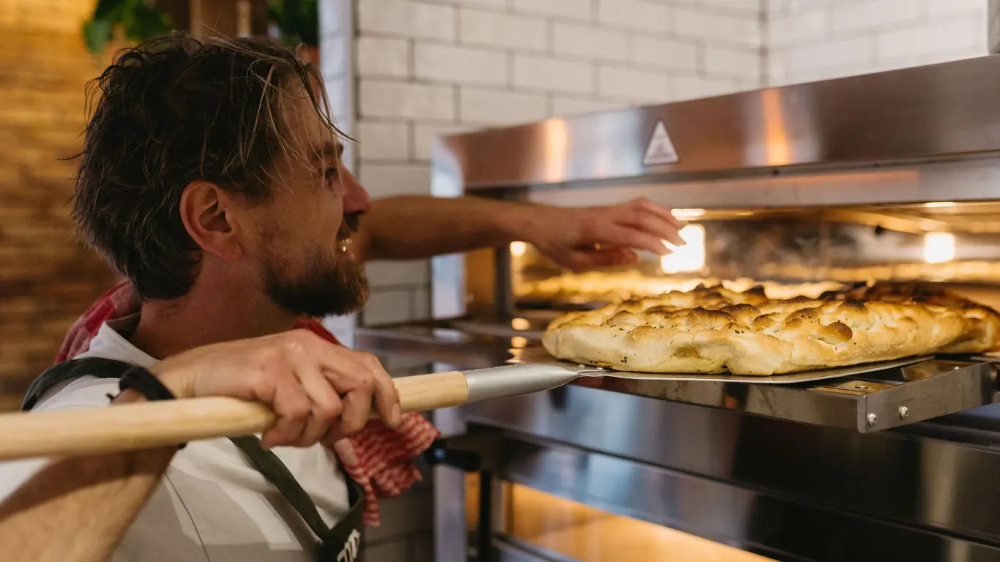
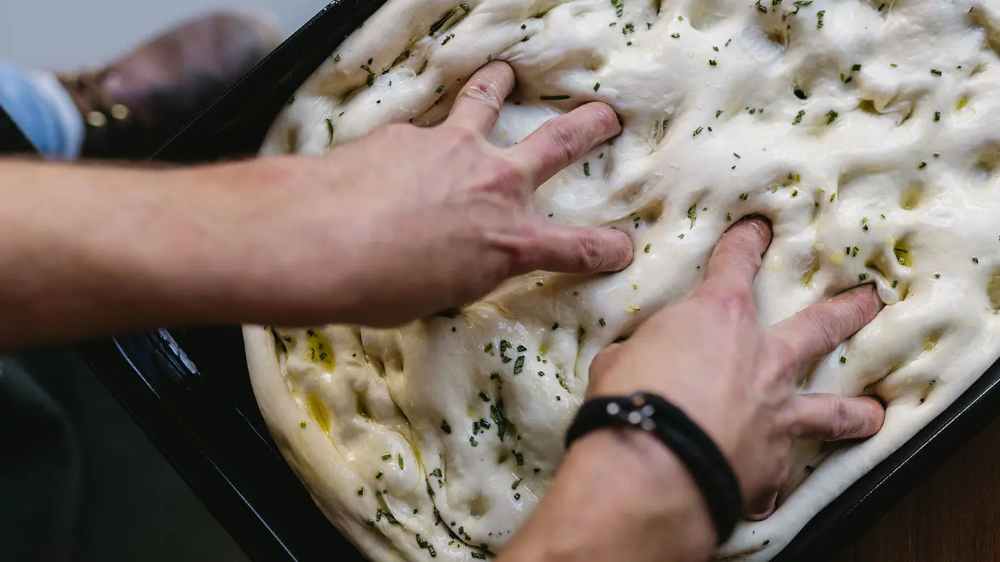
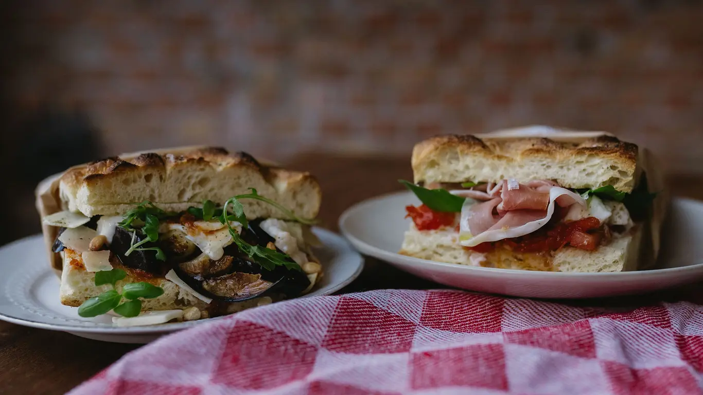
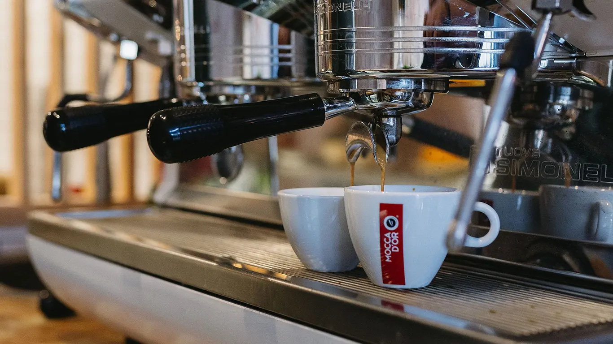
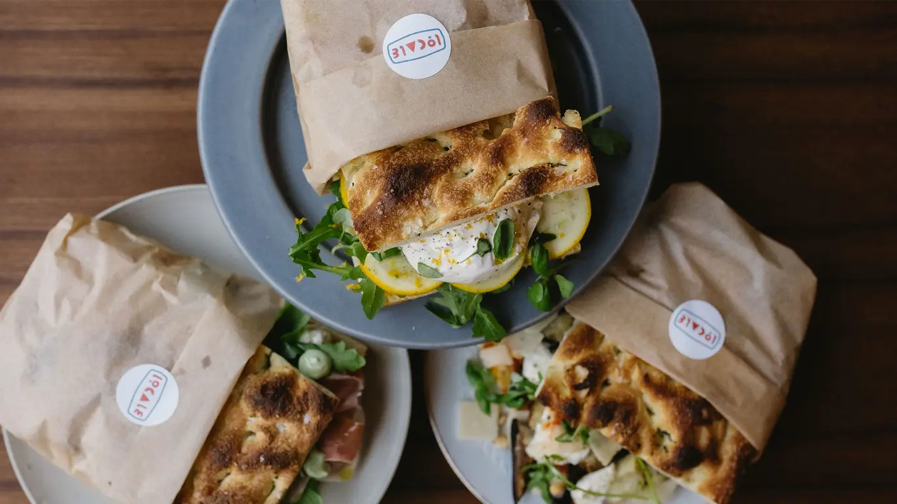
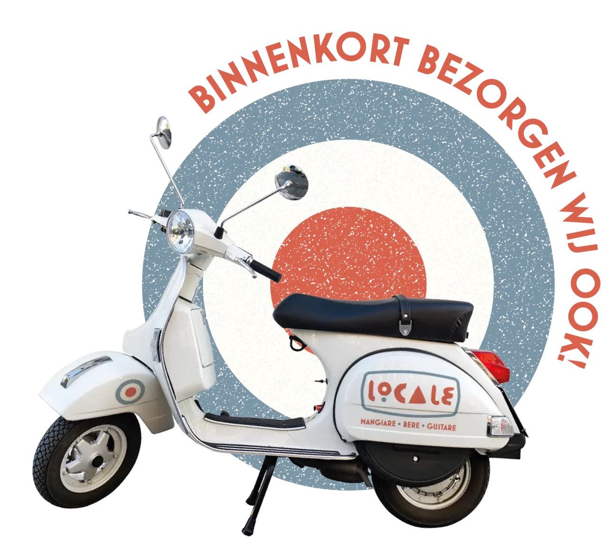
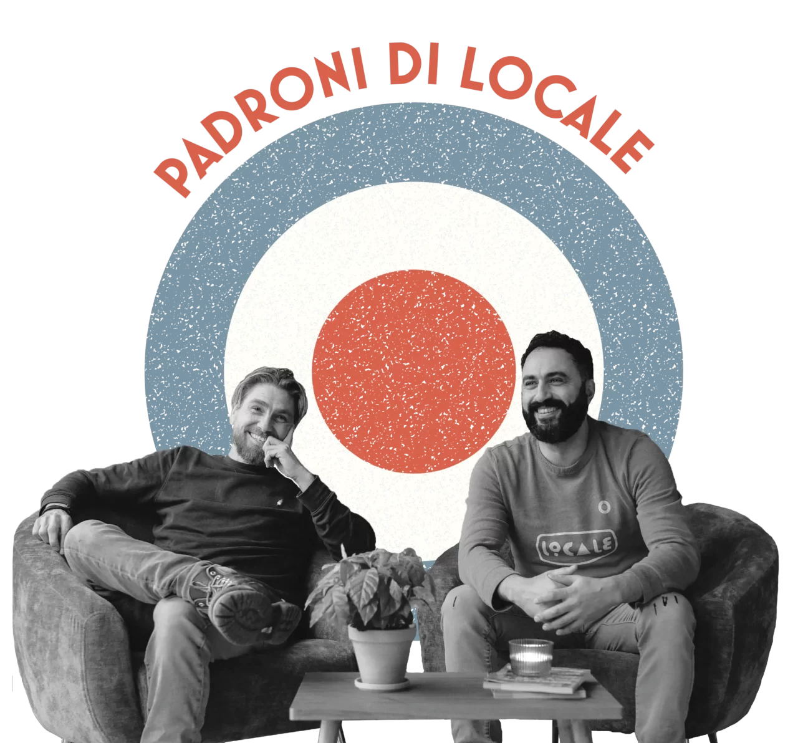

Overheerlijk!!
“Broodje staat in top 10 lekkerste broodjes van het land!!”

Italiaans brood uit Toscane, krokant aan de randen en zacht van binnen. Belegd met lokale ingrediënten, aan de Ginnekenstraat en op de Grote Markt in Breda.
Broodje staat in top 10 lekkerste broodjes van het land!!★★★★★ Barry D. op Tripadvisor
Geen poespas of onnodige opsmuk, maar eerlijke gerechten, vers en met liefde bereid.





Onze schiacciata’s rollen nu ook jouw kant op. We bezorgen vanaf de Grote Markt, handig voor op kantoor of een lunch met de hele club.
Personeelsfeest, bruiloft, verjaardag of een andere gelegenheid: vertel ons je wensen, dan stemmen we samen een Italiaans menu af.
“Broodje staat in top 10 lekkerste broodjes van het land!!”
“Heerlijke schiacciata (soort focaccia ) Broodjes worden erg royaal belegd.”
“We vonden dit restaurantje in Breda waar ze de originele schiacciata serveerden.”
“Echt mega lekker en vers belegd broodje gegeten.”
“Absoluut een aanrader! Beste koffie en Italiaanse sandwiches zeker.”
“Deze zaak is echt top!!!!”

Locale is van Ruud en Hicham. Echte aandacht voor de gast is soms ver te zoeken deze dagen. Daar willen wij verandering in brengen, met gastvrijheid die oprecht en behulpzaam is.
De Italiaanse keuken draait om simpele recepten met goede ingrediënten. Die halen we waar het kan uit de buurt, want daar komt onze naam vandaan.
Twee adressen in het centrum van Breda. Voor een lunch, een echte Italiaanse koffie of diner bij Bar Locale.
Diner, afhalen en bezorgen
Mail ons gerust, of volg ons op Instagram voor de specials van de dag.